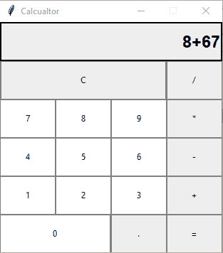
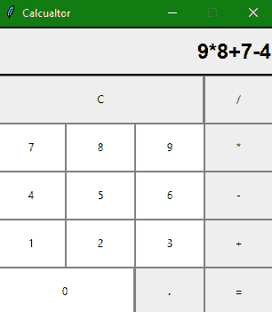

Tkinter 计算器应用（Python 项目）
原文：https://www.studytonight.com/tkinter/calculator-application-using-tkinter
在本教程中，我们将介绍如何使用 Python 创建一个简单的计算器应用。
在之前的教程中，我们已经介绍了如何创建 tkinter 按钮、 tkinter 标签、 tkinter 条目、 tkinter 框架和 tkinter 检查按钮等等。现在，在前面讨论的所有小部件的帮助下，我们将使用 Tkinter 创建一个计算器应用。
下面是我们的计算器的外观，它是通过使用输入字段、按钮来实现的，为了计算的目的，我们将在函数中定义的代码中使用逻辑，例如，如果您想要将两个数字相加，那么在这之后必须有一个用于加法目的的逻辑，类似地，对于减法、乘法等，我们已经创建了任务是执行这些操作的函数。

我们有一个输入字段，其中将显示用户输入，并显示计算的最终结果。
按钮有 0、1、2、3、4、5、6、7、8、9、+、-、*、/、=、。，和 C(清除按钮)
什么是计算器？
对于那些不知道的人来说，计算器基本上是一个在计算机上的程序，它模拟任何手持计算器的行为，用于执行数学计算。它是我们日常生活中使用的一种非常基本的设备。现在所有的智能手机都有计算器应用。
创建任何图形用户界面应用主要有两个步骤:
第一步是创建用户界面。
第二步是最重要的一步，在这一步中，给图形用户界面添加功能
现在让我们从开始，使用 Python 中的 Tkinter 创建一个简单的计算器应用，用于基本算术计算。
计算器应用代码
现在是时候看看使用 Tkinter 创建计算器应用的代码了:
from tkinter import *
win = Tk() # This is to create a basic window
win.geometry("312x324") # this is for the size of the window
win.resizable(0, 0) # this is to prevent from resizing the window
win.title("Calculator")
###################Starting with functions ####################
# 'btn_click' function :
# This Function continuously updates the
# input field whenever you enter a number
def btn_click(item):
global expression
expression = expression + str(item)
input_text.set(expression)
# 'bt_clear' function :This is used to clear
# the input field
def bt_clear():
global expression
expression = ""
input_text.set("")
# 'bt_equal':This method calculates the expression
# present in input field
def bt_equal():
global expression
result = str(eval(expression)) # 'eval':This function is used to evaluates the string expression directly
input_text.set(result)
expression = ""
expression = ""
# 'StringVar()' :It is used to get the instance of input field
input_text = StringVar()
# Let us creating a frame for the input field
input_frame = Frame(win, width=312, height=50, bd=0, highlightbackground="black", highlightcolor="black", highlightthickness=2)
input_frame.pack(side=TOP)
#Let us create a input field inside the 'Frame'
input_field = Entry(input_frame, font=('arial', 18, 'bold'), textvariable=input_text, width=50, bg="#eee", bd=0, justify=RIGHT)
input_field.grid(row=0, column=0)
input_field.pack(ipady=10) # 'ipady' is internal padding to increase the height of input field
#Let us creating another 'Frame' for the button below the 'input_frame'
btns_frame = Frame(win, width=312, height=272.5, bg="grey")
btns_frame.pack()
# first row
clear = Button(btns_frame, text = "C", fg = "black", width = 32, height = 3, bd = 0, bg = "#eee", cursor = "hand2", command = lambda: bt_clear()).grid(row = 0, column = 0, columnspan = 3, padx = 1, pady = 1)
divide = Button(btns_frame, text = "/", fg = "black", width = 10, height = 3, bd = 0, bg = "#eee", cursor = "hand2", command = lambda: btn_click("/")).grid(row = 0, column = 3, padx = 1, pady = 1)
# second row
seven = Button(btns_frame, text = "7", fg = "black", width = 10, height = 3, bd = 0, bg = "#fff", cursor = "hand2", command = lambda: btn_click(7)).grid(row = 1, column = 0, padx = 1, pady = 1)
eight = Button(btns_frame, text = "8", fg = "black", width = 10, height = 3, bd = 0, bg = "#fff", cursor = "hand2", command = lambda: btn_click(8)).grid(row = 1, column = 1, padx = 1, pady = 1)
nine = Button(btns_frame, text = "9", fg = "black", width = 10, height = 3, bd = 0, bg = "#fff", cursor = "hand2", command = lambda: btn_click(9)).grid(row = 1, column = 2, padx = 1, pady = 1)
multiply = Button(btns_frame, text = "*", fg = "black", width = 10, height = 3, bd = 0, bg = "#eee", cursor = "hand2", command = lambda: btn_click("*")).grid(row = 1, column = 3, padx = 1, pady = 1)
# third row
four = Button(btns_frame, text = "4", fg = "black", width = 10, height = 3, bd = 0, bg = "#fff", cursor = "hand2", command = lambda: btn_click(4)).grid(row = 2, column = 0, padx = 1, pady = 1)
five = Button(btns_frame, text = "5", fg = "black", width = 10, height = 3, bd = 0, bg = "#fff", cursor = "hand2", command = lambda: btn_click(5)).grid(row = 2, column = 1, padx = 1, pady = 1)
six = Button(btns_frame, text = "6", fg = "black", width = 10, height = 3, bd = 0, bg = "#fff", cursor = "hand2", command = lambda: btn_click(6)).grid(row = 2, column = 2, padx = 1, pady = 1)
minus = Button(btns_frame, text = "-", fg = "black", width = 10, height = 3, bd = 0, bg = "#eee", cursor = "hand2", command = lambda: btn_click("-")).grid(row = 2, column = 3, padx = 1, pady = 1)
# fourth row
one = Button(btns_frame, text = "1", fg = "black", width = 10, height = 3, bd = 0, bg = "#fff", cursor = "hand2", command = lambda: btn_click(1)).grid(row = 3, column = 0, padx = 1, pady = 1)
two = Button(btns_frame, text = "2", fg = "black", width = 10, height = 3, bd = 0, bg = "#fff", cursor = "hand2", command = lambda: btn_click(2)).grid(row = 3, column = 1, padx = 1, pady = 1)
three = Button(btns_frame, text = "3", fg = "black", width = 10, height = 3, bd = 0, bg = "#fff", cursor = "hand2", command = lambda: btn_click(3)).grid(row = 3, column = 2, padx = 1, pady = 1)
plus = Button(btns_frame, text = "+", fg = "black", width = 10, height = 3, bd = 0, bg = "#eee", cursor = "hand2", command = lambda: btn_click("+")).grid(row = 3, column = 3, padx = 1, pady = 1)
# fourth row
zero = Button(btns_frame, text = "0", fg = "black", width = 21, height = 3, bd = 0, bg = "#fff", cursor = "hand2", command = lambda: btn_click(0)).grid(row = 4, column = 0, columnspan = 2, padx = 1, pady = 1)
point = Button(btns_frame, text = ".", fg = "black", width = 10, height = 3, bd = 0, bg = "#eee", cursor = "hand2", command = lambda: btn_click(".")).grid(row = 4, column = 2, padx = 1, pady = 1)
equals = Button(btns_frame, text = "=", fg = "black", width = 10, height = 3, bd = 0, bg = "#eee", cursor = "hand2", command = lambda: bt_equal()).grid(row = 4, column = 3, padx = 1, pady = 1)
win.mainloop()
Tkinter 中有多种功能，在它们的帮助下变得简单和方便，只需要这个小代码就可以做一个简单的计算器。
除了 Tkinter 小部件之外，我们还在代码中定义了以下函数:
btn_click()功能:该功能处理按钮点击各种数字按钮将其添加到操作中。
bt_clear()功能:该功能用于处理清除操作，以清除计算器应用中以前的输入。
bt_equal()功能:该功能用于处理等号按钮执行操作并显示结果。
现在，我们将向您展示一个快照，作为上面代码的输出。是的，您可以在您的系统上实现它，以便更清楚地了解计算器应用使用 Tkinter:

总结:
在本教程中，我们使用 Tkinter 和 Tkinter 的各种小部件开发了一个基本的 Calculator 应用，我们已经在 Tkinter 教程中介绍了这些小部件。单击“下一步”查看更多使用 Tkinter 开发的应用，因为这将帮助您实践所学知识。